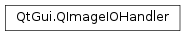

QImageIOHandler¶
Synopsis¶
Virtual functions¶
- def
canRead() - def
currentImageNumber() - def
currentImageRect() - def
imageCount() - def
jumpToImage(imageNumber) - def
jumpToNextImage() - def
loopCount() - def
name() - def
nextImageDelay() - def
option(option) - def
read(image) - def
setOption(option, value) - def
supportsOption(option) - def
write(image)
Detailed Description¶
The
PySide2.QtGui.QImageIOHandlerclass defines the common image I/O interface for all image formats in Qt.Qt uses
PySide2.QtGui.QImageIOHandlerfor reading and writing images throughPySide2.QtGui.QImageReaderandPySide2.QtGui.QImageWriter. You can also derive from this class to write your own image format handler using Qt’s plugin mechanism.Call
PySide2.QtGui.QImageIOHandler.setDevice()to assign a device to the handler, andPySide2.QtGui.QImageIOHandler.setFormat()to assign a format to it. OnePySide2.QtGui.QImageIOHandlermay support more than one image format.PySide2.QtGui.QImageIOHandler.canRead()returnstrueif an image can be read from the device, andPySide2.QtGui.QImageIOHandler.read()andPySide2.QtGui.QImageIOHandler.write()return true if reading or writing an image was completed successfully.
PySide2.QtGui.QImageIOHandleralso has support for animations formats, through the functionsPySide2.QtGui.QImageIOHandler.loopCount(),PySide2.QtGui.QImageIOHandler.imageCount(),PySide2.QtGui.QImageIOHandler.nextImageDelay()andPySide2.QtGui.QImageIOHandler.currentImageNumber().In order to determine what options an image handler supports, Qt will call
PySide2.QtGui.QImageIOHandler.supportsOption()andPySide2.QtGui.QImageIOHandler.setOption(). Make sure to reimplement these functions if you can provide support for any of the options in theQImageIOHandler.ImageOptionenum.To write your own image handler, you must at least reimplement
PySide2.QtGui.QImageIOHandler.canRead()andPySide2.QtGui.QImageIOHandler.read(). Then create aQImageIOPluginthat can create the handler. Finally, install your plugin, andPySide2.QtGui.QImageReaderandPySide2.QtGui.QImageWriterwill then automatically load the plugin, and start using it.See also
QImageIOPluginPySide2.QtGui.QImageReaderPySide2.QtGui.QImageWriter
-
class
PySide2.QtGui.QImageIOHandler¶ Constructs a
PySide2.QtGui.QImageIOHandlerobject.
-
PySide2.QtGui.QImageIOHandler.ImageOption¶ This enum describes the different options supported by
PySide2.QtGui.QImageIOHandler. Some options are used to query an image for properties, and others are used to toggle the way in which an image should be written.Constant Description QImageIOHandler.Size The original size of an image. A handler that supports this option is expected to read the size of the image from the image metadata, and return this size from PySide2.QtGui.QImageIOHandler.option()as aPySide2.QtCore.QSize.QImageIOHandler.ClipRect The clip rect, or ROI (Region Of Interest). A handler that supports this option is expected to only read the provided PySide2.QtCore.QRectarea from the original image inPySide2.QtGui.QImageIOHandler.read(), before any other transformation is applied.QImageIOHandler.ScaledSize The scaled size of the image. A handler that supports this option is expected to scale the image to the provided size (a PySide2.QtCore.QSize), after applying any clip rect transformation (). If the handler does not support this option,PySide2.QtGui.QImageReaderwill perform the scaling after the image has been read.QImageIOHandler.ScaledClipRect The scaled clip rect (or ROI, Region Of Interest) of the image. A handler that supports this option is expected to apply the provided clip rect (a PySide2.QtCore.QRect), after applying any scaling (ScaleSize) or regular clipping (). If the handler does not support this option,PySide2.QtGui.QImageReaderwill apply the scaled clip rect after the image has been read.QImageIOHandler.Description The image description. Some image formats, such as GIF and PNG, allow embedding of text or comments into the image data (e.g., for storing copyright information). It’s common that the text is stored in key-value pairs, but some formats store all text in one continuous block. PySide2.QtGui.QImageIOHandlerreturns the text as onePySide2.QtCore.QString, where keys and values are separated by a ‘:’, and keys-value pairs are separated by two newlines (\n\n). For example, “Title: Sunset\n\nAuthor: Jim Smith\nSarah Jones\n\n”. Formats that store text in a single block can use “Description” as the key.QImageIOHandler.CompressionRatio The compression ratio of the image data. A handler that supports this option is expected to set its compression rate depending on the value of this option (an int) when writing. QImageIOHandler.Gamma The gamma level of the image. A handler that supports this option is expected to set the image gamma level depending on the value of this option (a float) when writing. QImageIOHandler.Quality The quality level of the image. A handler that supports this option is expected to set the image quality level depending on the value of this option (an int) when writing. QImageIOHandler.Name The name of the image. A handler that supports this option is expected to read the name from the image metadata and return this as a PySide2.QtCore.QString, or when writing an image it is expected to store the name in the image metadata.QImageIOHandler.SubType The subtype of the image. A handler that supports this option can use the subtype value to help when reading and writing images. For example, a PPM handler may have a subtype value of “ppm” or “ppmraw”. QImageIOHandler.IncrementalReading A handler that supports this option is expected to read the image in several passes, as if it was an animation. PySide2.QtGui.QImageReaderwill treat the image as an animation.QImageIOHandler.Endianness The endianness of the image. Certain image formats can be stored as BigEndian or LittleEndian. A handler that supports Endianness uses the value of this option to determine how the image should be stored. QImageIOHandler.Animation Image formats that support animation return true for this value in PySide2.QtGui.QImageIOHandler.supportsOption(); otherwise, false is returned.QImageIOHandler.BackgroundColor Certain image formats allow the background color to be specified. A handler that supports initializes the background color to this option (a PySide2.QtGui.QColor) when reading an image.QImageIOHandler.ImageFormat The image’s data format returned by the handler. This can be any of the formats listed in QImage.Format.QImageIOHandler.SupportedSubTypes Image formats that support different saving variants should return a list of supported variant names ( QList<PySide2.QtCore.QByteArray>) in this option.QImageIOHandler.OptimizedWrite . A handler which supports this option is expected to turn on optimization flags when writing. QImageIOHandler.ProgressiveScanWrite . A handler which supports this option is expected to write the image as a progressive scan image. QImageIOHandler.ImageTransformation . A handler which supports this option can read the transformation metadata of an image. A handler that supports this option should not apply the transformation itself. QImageIOHandler.TransformedByDefault . A handler that reports support for this feature will have image transformation metadata applied by default on read.
-
PySide2.QtGui.QImageIOHandler.Transformation¶ This enum describes the different transformations or orientations supported by some image formats, usually through EXIF.
Constant Description QImageIOHandler.TransformationNone No transformation should be applied. QImageIOHandler.TransformationMirror Mirror the image horizontally. QImageIOHandler.TransformationFlip Mirror the image vertically. QImageIOHandler.TransformationRotate180 Rotate the image 180 degrees. This is the same as mirroring it both horizontally and vertically. QImageIOHandler.TransformationRotate90 Rotate the image 90 degrees. QImageIOHandler.TransformationMirrorAndRotate90 Mirror the image horizontally and then rotate it 90 degrees. QImageIOHandler.TransformationFlipAndRotate90 Mirror the image vertically and then rotate it 90 degrees. QImageIOHandler.TransformationRotate270 Rotate the image 270 degrees. This is the same as mirroring it both horizontally, vertically and then rotating it 90 degrees.
Note
This enum was introduced in Qt 5.5.
-
PySide2.QtGui.QImageIOHandler.canRead()¶ Return type: PySide2.QtCore.boolReturns
trueif an image can be read from the device (i.e., the image format is supported, the device can be read from and the initial header information suggests that the image can be read); otherwise returnsfalse.When reimplementing , make sure that the I/O device (
PySide2.QtGui.QImageIOHandler.device()) is left in its original state (e.g., by using peek() rather thanPySide2.QtGui.QImageIOHandler.read()).See also
PySide2.QtGui.QImageIOHandler.read()QIODevice.peek()
-
PySide2.QtGui.QImageIOHandler.currentImageNumber()¶ Return type: PySide2.QtCore.intFor image formats that support animation, this function returns the sequence number of the current image in the animation. If this function is called before any image is
PySide2.QtGui.QImageIOHandler.read(), -1 is returned. The number of the first image in the sequence is 0.If the image format does not support animation, 0 is returned.
See also
-
PySide2.QtGui.QImageIOHandler.currentImageRect()¶ Return type: PySide2.QtCore.QRectReturns the rect of the current image. If no rect is defined for the image, and empty QRect() is returned.
This function is useful for animations, where only parts of the frame may be updated at a time.
-
PySide2.QtGui.QImageIOHandler.device()¶ Return type: PySide2.QtCore.QIODeviceReturns the device currently assigned to the
PySide2.QtGui.QImageIOHandler. If not device has been assigned, 0 is returned.
-
PySide2.QtGui.QImageIOHandler.format()¶ Return type: PySide2.QtCore.QByteArrayReturns the format that is currently assigned to
PySide2.QtGui.QImageIOHandler. If no format has been assigned, an empty string is returned.
-
PySide2.QtGui.QImageIOHandler.imageCount()¶ Return type: PySide2.QtCore.intFor image formats that support animation, this function returns the number of images in the animation. If the image format does not support animation, or if it is unable to determine the number of images, 0 is returned.
The default implementation returns 1 if
PySide2.QtGui.QImageIOHandler.canRead()returnstrue; otherwise 0 is returned.
-
PySide2.QtGui.QImageIOHandler.jumpToImage(imageNumber)¶ Parameters: imageNumber – PySide2.QtCore.intReturn type: PySide2.QtCore.boolFor image formats that support animation, this function jumps to the image whose sequence number is
imageNumber. The next call toPySide2.QtGui.QImageIOHandler.read()will attempt to read this image.The default implementation does nothing, and returns
false.
-
PySide2.QtGui.QImageIOHandler.jumpToNextImage()¶ Return type: PySide2.QtCore.boolFor image formats that support animation, this function jumps to the next image.
The default implementation does nothing, and returns
false.
-
PySide2.QtGui.QImageIOHandler.loopCount()¶ Return type: PySide2.QtCore.intFor image formats that support animation, this function returns the number of times the animation should loop. If the image format does not support animation, 0 is returned.
-
PySide2.QtGui.QImageIOHandler.name()¶ Return type: PySide2.QtCore.QByteArrayUse
PySide2.QtGui.QImageIOHandler.format()instead.
-
PySide2.QtGui.QImageIOHandler.nextImageDelay()¶ Return type: PySide2.QtCore.intFor image formats that support animation, this function returns the number of milliseconds to wait until reading the next image. If the image format does not support animation, 0 is returned.
-
PySide2.QtGui.QImageIOHandler.option(option)¶ Parameters: option – PySide2.QtGui.QImageIOHandler.ImageOptionReturn type: object Returns the value assigned to
optionas aPySide2.QtCore.QVariant. The type of the value depends on the option. For example, option(Size) returns aPySide2.QtCore.QSizevariant.
-
PySide2.QtGui.QImageIOHandler.read(image)¶ Parameters: image – PySide2.QtGui.QImageReturn type: PySide2.QtCore.boolRead an image from the device, and stores it in
image. Returnstrueif the image is successfully read; otherwise returns false.For image formats that support incremental loading, and for animation formats, the image handler can assume that
imagepoints to the previous frame.
-
PySide2.QtGui.QImageIOHandler.setDevice(device)¶ Parameters: device – PySide2.QtCore.QIODeviceSets the device of the
PySide2.QtGui.QImageIOHandlertodevice. The image handler will use this device when reading and writing images.The device can only be set once and must be set before calling
PySide2.QtGui.QImageIOHandler.canRead(),PySide2.QtGui.QImageIOHandler.read(),PySide2.QtGui.QImageIOHandler.write(), etc. If you need to read multiple files, construct multiple instances of the appropriatePySide2.QtGui.QImageIOHandlersubclass.
-
PySide2.QtGui.QImageIOHandler.setFormat(format)¶ Parameters: format – PySide2.QtCore.QByteArraySets the format of the
PySide2.QtGui.QImageIOHandlertoformat. The format is most useful for handlers that support multiple image formats.This function is declared const so that it can be called from
PySide2.QtGui.QImageIOHandler.canRead().
-
PySide2.QtGui.QImageIOHandler.setOption(option, value)¶ Parameters: - option –
PySide2.QtGui.QImageIOHandler.ImageOption - value – object
Sets the option
optionwith the valuevalue.See also
PySide2.QtGui.QImageIOHandler.option()QImageIOHandler.ImageOption- option –
-
PySide2.QtGui.QImageIOHandler.supportsOption(option)¶ Parameters: option – PySide2.QtGui.QImageIOHandler.ImageOptionReturn type: PySide2.QtCore.boolReturns
trueif thePySide2.QtGui.QImageIOHandlersupports the optionoption; otherwise returnsfalse. For example, if thePySide2.QtGui.QImageIOHandlersupports theSizeoption, (Size) must return true.
-
PySide2.QtGui.QImageIOHandler.write(image)¶ Parameters: image – PySide2.QtGui.QImageReturn type: PySide2.QtCore.boolWrites the image
imageto the assigned device. Returnstrueon success; otherwise returnsfalse.The default implementation does nothing, and simply returns
false.
© 2018 The Qt Company Ltd. Documentation contributions included herein are the copyrights of their respective owners. The documentation provided herein is licensed under the terms of the GNU Free Documentation License version 1.3 as published by the Free Software Foundation. Qt and respective logos are trademarks of The Qt Company Ltd. in Finland and/or other countries worldwide. All other trademarks are property of their respective owners.